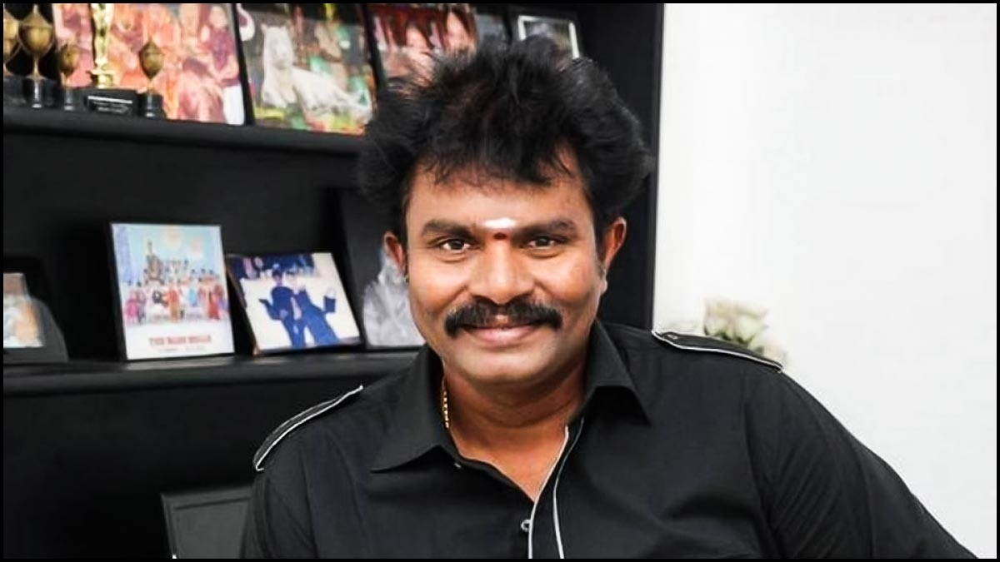

|  |
Harikrishnan is an Indian film director and screenwriter best known for his action and masala films
in Tamil cinema. He made his directorial debut with Thamizh (2002).[2] He later directed films such
as Saamy (2003), Kovil (2004), Ayya (2005), Thaamirabharani (2007), Vel (2007) and the Singam film
series (2010-2017). He mostly directed Coimbatore, Dindigul, Tenkasi and Thoothukudi-Tirunelveli
district based movies.Hari was born on 10 September 1971 in the Thoothukudi district in Tamil Nadu,
India. His father, Gopalakrishnan, runs a grocery store. Later, his family moved to Chennai, where
Hari graduated with a degree in Commerce
|